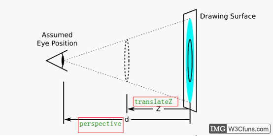
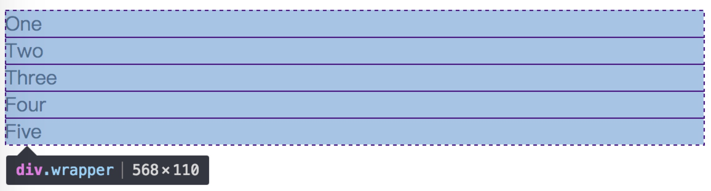
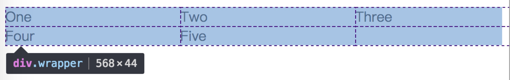
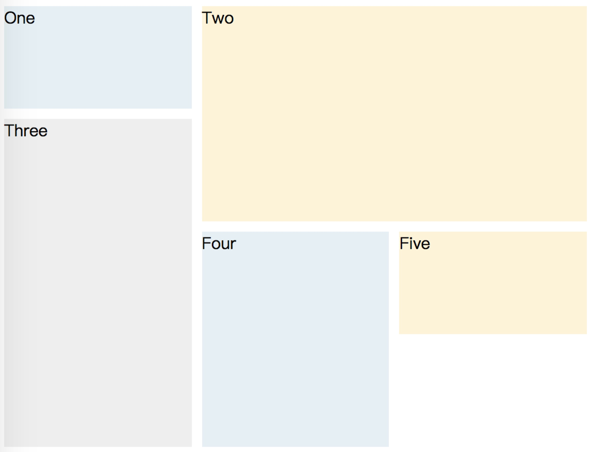

|
|
class Scheduler {
constructor () {
this.count = 0
this.waitQueue = [];
}
add(promiseCreator) {
if (this.count < 2) {
this.count += 1;
return this.run(promiseCreator)
} else {
return new Promise(resolve => {
this.waitQueue.push(() => promiseCreator().then(resolve));
})
}
}
run(promiseCreator) {
return promiseCreator().then(() => {
this.count -= 1;
if (this.waitQueue.length) {
this.run(this.waitQueue.shift())
}
});
}
}
const timeout = (time) => new Promise(resolve => {
setTimeout(resolve, time)
})
const scheduler = new Scheduler();
const addTask = (time, order) => {
scheduler.add(() => timeout(time)).then(() => console.log(time, 'time, order', order))
}
addTask(1000, '1');
addTask(500, '2');
addTask(300, '3');
addTask(400, '4');
// output: 2 3 1 4
// 一开始，1、2两个任务进入队列
// 500ms时，2完成，输出2，任务3进队
// 800ms时，3完成，输出3，任务4进队
// 1000ms时，1完成，输出1
// 1200ms时，4完成，输出4
var a = {n:10};
function out(obj){
var b = obj;
var c = b;
b.n = 30;
c = {n : 40};
console.log(a.n);
console.log(b.n);
console.log(c.n);
}
out(a)
无服务架构探索之路
redux原理
|
|
connect
connect是一个高阶函数，首先传入mapStateToProps、mapDispatchToProps，然后返回一个生产Component的函数(wrapWithConnect)，然后再将真正的Component作为参数传入wrapWithConnect，这样就生产出一个经过包裹的Connect组件，该组件具有如下特点:
通过props.store获取祖先Component的store
props包括stateProps、dispatchProps、parentProps,合并在一起得到nextState，作为props传给真正的Component
componentDidMount时，添加事件this.store.subscribe(this.handleChange)，实现页面交互
shouldComponentUpdate时判断是否有避免进行渲染，提升页面性能，并得到nextState
componentWillUnmount时移除注册的事件this.handleChange
|
|
视差滚动实践
视差滚动（Parallax Scrolling）是指让多层背景以不同的速度移动，形成立体的运动效果，带来非常出色的视觉体验。官网的设计师们也十分热衷于这样的动效，最近的新品页面或多或少都运用了视差滚动效果。起初官网视差基本上是使用插件去完成简单的效果，但时代在进步，设计师的要求也越来越高，要实现的效果也越来越复杂，对页面性能也带来巨大负担。实现高效的视差滚动成了新的挑战。
视差滚动的原理
实现视差滚动，主要是对页面上的元素进行分层，让其以不同于页面滚轮滚动的速度运动，这样看上去就形成了视觉上的差异。
通常来说可以把页面上的元素分成三个层次：背景层，前景层(内容层和背景层之间的元素)，内容层。从这三个层次入手，就能营造出视差的效果：
（1）背景层的滚动(最慢)；
（2）前景层的滚动(次慢)；
（3）内容层的滚动(可以和页面的滚动速度一致)。
视差滚动实现
简单实现 😶
设置元素的背景属性 background-attachment 为 fixed。默认情况下，此属性取值为scroll，页面滚动时，内容和背景一起运动，如果取值fixed，背景相对浏览器固定。这样看上去背景和内容就分开了滚动了。
例如ronin-s页面。
但是这样的效果，设计师一定会说：太死板了吧，能不能有点惯性的感觉？
于是乎，我们要让页面元素真正的“动起来”。
动起来 🙂
我们开始监听用户滚动事件，对于前景层的内容，可以随着用户滚动去改变元素的 translate(x, y, z)；对于背景层则去改变 background-position。
例如mavic-air页面就是通过改变元素背景位置，使背景图片”动起来“的。
代码如下：123456789101112131415161718function parallaxScroll(elm, options) { var indicatorPosition = 0; var windowHeight = $window.height(); var elHeight = elm.height(); function loop() { var offsetTop = elm.offset().top; var scrollOffset = $window.scrollTop(); if (scrollOffset >= offsetTop - windowHeight && scrollOffset <= offsetTop + elHeight) { var scrollPercent = (offsetTop - windowHeight - scrollOffset) / (windowHeight + elHeight); indicatorPosition += (scrollPercent - indicatorPosition) * options.factor; var calcOffset = indicatorPosition * options.offset; elm.css('background-position-y', calcOffset + 'px'); } requestAnimationFrame(loop); } loop();}
网上也有许多视差滚动的插件，可以直接使用 😀
parallax.js
Stella.js
Super Scrollorama
curtain.js
好处
相比于 background-attachment: fixed 方式，我们可以随心所欲的定义元素的动画，让页面看起来更生动，动画更平滑。
带来的问题
监听滚动事件，要想做到尽可能地流畅渲染效果，就不可以让滚动事件节流防抖动，必须要时刻紧跟滚动事件才行，显然是有些耗费性能的。改变一个非绝对定位元素的位置，是很有可能会触发页面的重绘，而改变 background-position 同样是会出现这种情况，如果每一帧都渲染，显然非常耗费性能，如果页面功能复杂甚至可能造成页面的卡顿。
高性能 😆
为了提高性能，尝试了一种新的方式：css 3D Transforms
使用css实现视差滚动效果可以解决上述这些问题，并允许浏览器利用硬件加速，实现帧速相同的平滑滚动。
实现方式如下：1234567891011121314151617181920/* 滚动容器 */.parallax-viewport { /* 创建3D透视 */ perspective: 1px; /* 透视消失点坐标 */ perspective-origin: right top; /* 元素的内容以正常的方式滚动 */ overflow-x: hidden; overflow-y: auto; position: relative;}/* 保护子元素的3D效果 */.parallax-container { transform-style: preserve-3d;}/* 滚动比较慢的背景元素 */.parallax-child { transform-origin: right top 0px; transform: scale(2) translate3d(0px, 0px, -1px);}
|
|
- 将滚动的容器元素属性设置为overflow-y: scroll（和overflow-x:hidden）。
- 对容器元素元素应用perspective值，并将perspective-origin设置为top left或0 0。
- 对容器元素的子元素应用Z轴变形，通过缩放子元素实现视差效果。
运用这个方式实现了一个demo
实现原理
定义滚动容器元素的 perspective 属性将创建固定的透视图3D视口。设置 overflow-y：auto 使元素的内容以正常的方式滚动，但后代元素将相对于透视图呈现，这是创建视差效果的关键。对子元素设置translateZ属性，将其移动更远或更靠近视口，在Z轴上远离视口的子元素会以不同的比率滚动，这样就产生了视差滚动。非常重要的是，这一过程作为浏览器内部滚动机制一部分自动处理，无需监听滚动事件或改变背景位置。
由于使用3D变换创建了视差效应，因此对于沿着Z轴转换的元素具有副作用——当我们将其移动距离视口更近或更远时，其可视大小会发生变化。为了解决这个问题，我们需要对该元素应用一个scale变换，使其看起来以原始大小呈现。

scale可以用1 +（translateZ * -1）/perspective来计算。例如，如果我们的视口perspective为1px，并且我们沿Z轴translateZ (-2px)，则校正的scale值将为3。
网上有个demo可以让你直观的理解这个原理。
兼容性问题
关于 3D Transforms，目前主流浏览器都可以支持（具体情况参考caniuse），对于不支持的浏览器只能做降级处理。
结语
视差滚动其实是个非常有趣的特效。运用得当可以让我们的网页体验更上一层~
参考
Node服务（GitLab CI/CD + Docker）持续集成部署
CSS Grid
Grid(网格) 布局是第一个专门为解决布局问题而创建的 CSS 模块，我们终于不需要想尽办法hack 页面布局样式了。
网格容器
我们通过在元素上声明 display：grid 或 display：inline-grid 来创建一个网格容器。一旦我们这样做，这个元素的所有直系子元素将成为网格项目。1234567<div class="wrapper"> <div>One</div> <div>Two</div> <div>Three</div> <div>Four</div> <div>Five</div></div>
|
|

网格轨道
我们通过 grid-template-columns 和 grid-template-rows 属性来定义网格中的行和列。这些属性定义了网格的轨道。一个网格轨道就是网格中任意两条线之间的空间。1234.wrapper { display: grid; grid-template-columns: 200px 200px 200px;}

fr单位
轨道可以使用任何长度单位进行定义。 网格还引入了一个额外的长度单位来帮助我们创建灵活的网格轨道。新的fr单位代表网格容器中可用空间的一等份。1234.wrapper { display: grid; grid-template-columns: 1fr 1fr 1fr;}
使用repeat()
使用 repeat() 标记来重复部分或整个轨道列表1234.wrapper { display: grid; grid-template-columns: 1fr 1fr 1fr;}
也可写成：1234.wrapper { display: grid; grid-template-columns: repeat(3, 1fr);}
隐式和显式网格
当我们创建上文中网格例子的时候，我们用 grid-template-columns 属性定义了自己的列轨道，但是却让网格按所需的内容创建行，这些行会被创建在隐式网格中。显式网格包含了你在 grid-template-columns 和 grid-template-rows 属性中定义的行和列。如果你在网格定义之外又放了一些东西，或者因为内容的数量而需要的更多网格轨道的时候，网格将会在隐式网格中创建行和列。按照默认，这些轨道将自动定义尺寸，所以会根据它里面的内容改变尺寸。
你也可以在隐式网格中用 grid-auto-rows 和 grid-auto-columns 属性来定义一个设置大小尺寸的轨道。
轨道大小和minmax()
下面例子中我用minmax()作为grid-auto-rows的值,自动创建的行高将会是最小100像素，最大为auto12345.wrapper { display: grid; grid-template-columns: repeat(3, 1fr); grid-auto-rows: minmax(100px, auto);}
网格间距
|
|
放置网格项目
当放置子元素时，我们使用 网格线 对元素进行定位。1234567<div class="wrapper"> <div class="one">One</div> <div class="two">Two</div> <div class="three">Three</div> <div class="four">Four</div> <div class="five">Five</div></div>
|
|

使用以上的方式就能快速实现任意想要的布局。
node单元测试
为什么需要单元测试
单元测试的重要就像城市离不开下水道，虽然一般用户感知不到，但一旦没有或不健全，就是灾难，参见天朝的城市…浏览器端 js 的单元测试，因为前端业务的多变性和对dom的依赖，业务代码的单测一直很难展开，而 node 应用不存在这个问题，node 中没有dom，而且变化会比前端少，稳定性诉求更高。node 中单元测试容易展开，且成效好。
node 中的单元测试
mocha 是常用的 node 单元测试框架，使用简单且灵活，是进行 node 单测的首选。
安装 mocha：
|
|
在 test 目录我们新建一个 demo-spec.js（约定-spec为用例文件） 文件，测试数组的 indexOf() 方法：123456789var assert = require("assert");describe('Array', function() { describe('#indexOf()', function() { it('should return -1 when the value is not present', function() { assert.equal(-1, [1,2,3].indexOf(5)); assert.equal(-1, [1,2,3].indexOf(0)); }); });});
assert 模块是 node 内置的断言库。
describe() 用于定义测试用例组，是可以嵌套的。
it() 是定义具体的测试用例。
assert.equal() 用于判断值是否符合预期。
命令行运行用例 ：1mocha
默认会运行 test 目录下的所有用例文件，输出的信息123Array#indexOf() ✓ should return -1 when the value is not present
should断言库
node 内置的断言库 assert ，功能比较弱，不太好用，推荐使用 should ，详细api可以看 should.js。
should 的断言方法注入到 Object.prototype 中，所以断言的风格更符合用户思维习惯，也支持链式调用，跟 jQuery 有点像：1234567891011var should = require("should");describe('Should test', function() { it('number', function() { (123).should.be.a.Number; }); it('object property', function() { var obj = {name:'minghe',email:"minghe36@gmail.com"}; obj.should.have.property('name','minghe'); obj.should.have.property('email'); });});
(123).should.be.a.Number 判断 123 是否是一个数字，适用于其他类型的判断。
obj.should.have.property(‘name’,’minghe’) obj 对象是否包含属性 name ，且 name = ‘minghe’ 。
更多的 api 请看 文档
mocha异步测试
|
|
关键在于 done 实参，必须在执行完异步后（在异步回调中）执行下 done()，就能捕获到用例。
回调函数 done() 支持接收一个错误：done(err)，用于简化错误处理。
supertest请求测试
在 node 业务应用中，我们经常需要测试路由的可用性，如何处理呢？
可以使用 supertest 模块，supertest 专门用于 http 断言，支持 http 请求测试。
用例写法：
|
|
superagent(app.listen()) 会截获 koa 的 http 请求，可以使用 get 、 post 等方法，对请求进行测试。
|
|
get(‘/‘) 即测试首页 get 请求，.expect(200, done) 测试 请求状态码是否为 200 （请求成功），done 是必须传入的，这样请求测试结束后，才能把测试信息推送给mocha处理。
上述测试代码等价于：
|
|
.end() 回调会在请求完成后触发，可以在回调中对错误进行处理，res 包含完整的请求信息，可以对这些信息进行测试，比如页面输出的内容等。
运行命令 ：
|
|
留意：测试 koa 的请求必须加–harmony，否者会抛异常。
我们经常需要对 json 接口的数据结构合法性进行测试，如何借助 supertest 实现测试呢？
我们新建个 /api/user/:id 的路由，返回一个用户信息：
|
|
测试此路由是否返回正确的数据：
|
|
supertest 很强大，可以设置请求的头信息，使用 set() ：
|
|
而 expect() 除了支持状态码测试外，还支持头信息测试：.expect(‘Content-Type’, /json/) 。
测试覆盖率
我们写了测试用例，但如何知道用例的覆盖率呢？
可以使用 istanbul 实现单元测试覆盖率报告，istanbul 功能非常强大，支持与 mocha 的结合。
在应用工程中执行：
|
|
命令比较长，我们将其写入到 package.json 的 script 方便调用：
|
|
- NODE_ENV=local node –harmony ：以本地环境、es6支持启动 node 应用；
- node_modules/.bin/istanbul cover –report html ：调用 istanbul 程序执行 cover 命令（执行覆盖率计算），–report html 生成的报告以 html 的形式；
- ./node_modules/mocha/bin/_mocha – ‘test/*/-spec.js’ ：关联 mocha 测试驱动程序，执行 tes 目录下 所有的后缀是 -spec.js 的用例文件。
运行 npm test ，如果一切正常，将会在工程目录中生成 coverage 目录，可以打开 coverage/index.html 查看覆盖率报告。
Hexo博客搭建
使用Hexo搭建静态博客.
参考文档：documentation
Quick Start
Create a new post
|
|
More info: Writing
Run server
|
|
More info: Server
Generate static files
|
|
More info: Generating
Deploy to remote sites
|
|
More info: Deployment